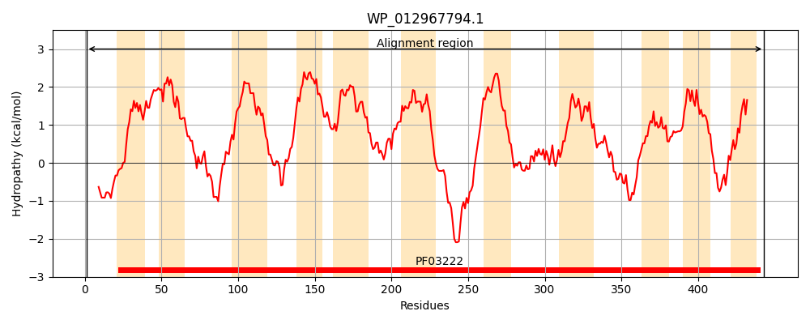
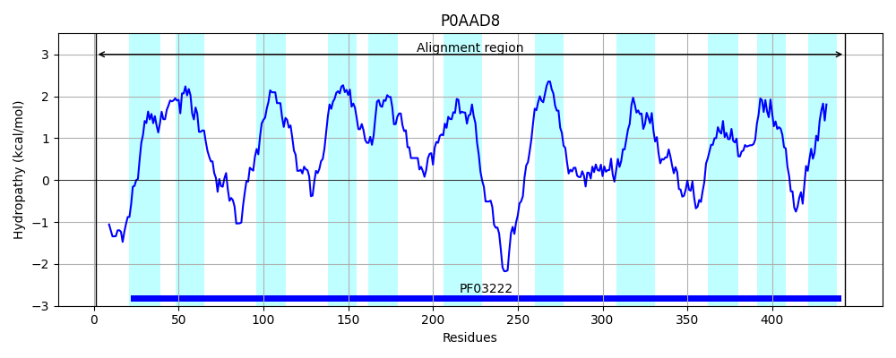
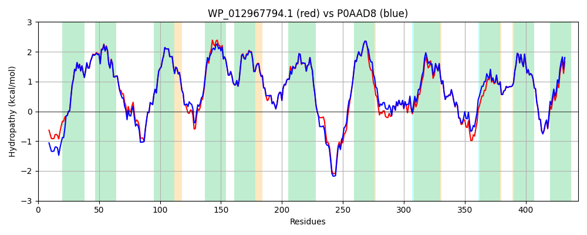

Hit Accession: P0AAD8
Hit TCID: 2.A.42.2.2
Hit Description: gnl|BL_ORD_ID|8657 gnl|TC-DB|P0AAD8|2.A.42.2.2 Threonine/serine transporter - Escherichia coli.
Mach Len: 443
e:0.000000
Query TMS Count : 11
Hit TMS Count: 11
TMS-Overlap Score: 10.500000
Predicted Substrates:CHEBI:16857;L-threonine, CHEBI:9116;serine
BLAST Alignment:
Score: 2091 , Bit scores: 810 bits, E-value: 0.0e+00, Alignment length: 443, Percentage identity: 91
Query: 1 MSTTESIASSQTSLSSWRKSDTTWTLGLFGTAIGAGVLFFPIRAGFGGLIPILVMLVLAYPIAFYCHRALARLCLSGANPSGNITETVEEHFGKTGGVVITFLYFFAICPLLWIYGVTITNTFMTFWENQLQMPALNRGVVALLLLLLMAFVIWFGKDLMVKVMSYLVWPFIASLVVISLSLIPYWNSAVIEQVNLSDIALTGHDGILVTVWLGISIMVFSFNFSPIVSSFVVSKREEYEAQFGREYTERKCSQIISRASMLMVAVVMFFAFSCLFTLSPQNMADAKAQNIPVLSYLANHFASMSGTKSTFATLLEYGASIIALVAIFKSFFGHYLGTLEGLNGLILRFGYKGDKTRVSSGKLNTLSMVFIMGSTWVVAYANPNILDLIEAMGAPIIASLLCLLPMYAIRKAPSLAKYRGRLDNLFVTAIGLLTILNIVYKLF 443
MST++SI SSQT SSWRKSDTTWTLGLFGTAIGAGVLFFPIRAGFGGLIPIL+MLVLAYPIAFYCHRALARLCLSG+NPSGNITETVEEHFGKTGGVVITFLYFFAICPLLWIYGVTITNTFMTFWENQL LNRG VAL LLLLMAFVIWFGKDLMVKVMSYLVWPFIASLV+ISLSLIPYWNSAVI+QV+L ++LTGHDGIL+TVWLGISIMVFSFNFSPIVSSFVVSKREEYE FGR++TERKCSQIISRASMLMVAVVMFFAFSCLFTLSP NMA+AKAQNIPVLSYLANHFASM+GTK+TFA LEY ASIIALVAIFKSFFGHYLGTLEGLNGL+L+FGYKGDKT+VS GKLNT+SM+FIMGSTWVVAYANPNILDLIEAMGAPIIASLLCLLPMYAIRKAPSLAKYRGRLDN+FVT IGLLTILNIVYKLF
Sbjct: 1 MSTSDSIVSSQTKQSSWRKSDTTWTLGLFGTAIGAGVLFFPIRAGFGGLIPILLMLVLAYPIAFYCHRALARLCLSGSNPSGNITETVEEHFGKTGGVVITFLYFFAICPLLWIYGVTITNTFMTFWENQLGFAPLNRGFVALFLLLLMAFVIWFGKDLMVKVMSYLVWPFIASLVLISLSLIPYWNSAVIDQVDLGSLSLTGHDGILITVWLGISIMVFSFNFSPIVSSFVVSKREEYEKDFGRDFTERKCSQIISRASMLMVAVVMFFAFSCLFTLSPANMAEAKAQNIPVLSYLANHFASMTGTKTTFAITLEYAASIIALVAIFKSFFGHYLGTLEGLNGLVLKFGYKGDKTKVSLGKLNTISMIFIMGSTWVVAYANPNILDLIEAMGAPIIASLLCLLPMYAIRKAPSLAKYRGRLDNVFVTVIGLLTILNIVYKLF 443 | Protein Hydropathy Plots: |
|---|
|  |  |
Pairwise Alignment-Hydropathy Plot:
|
|---|
|  |